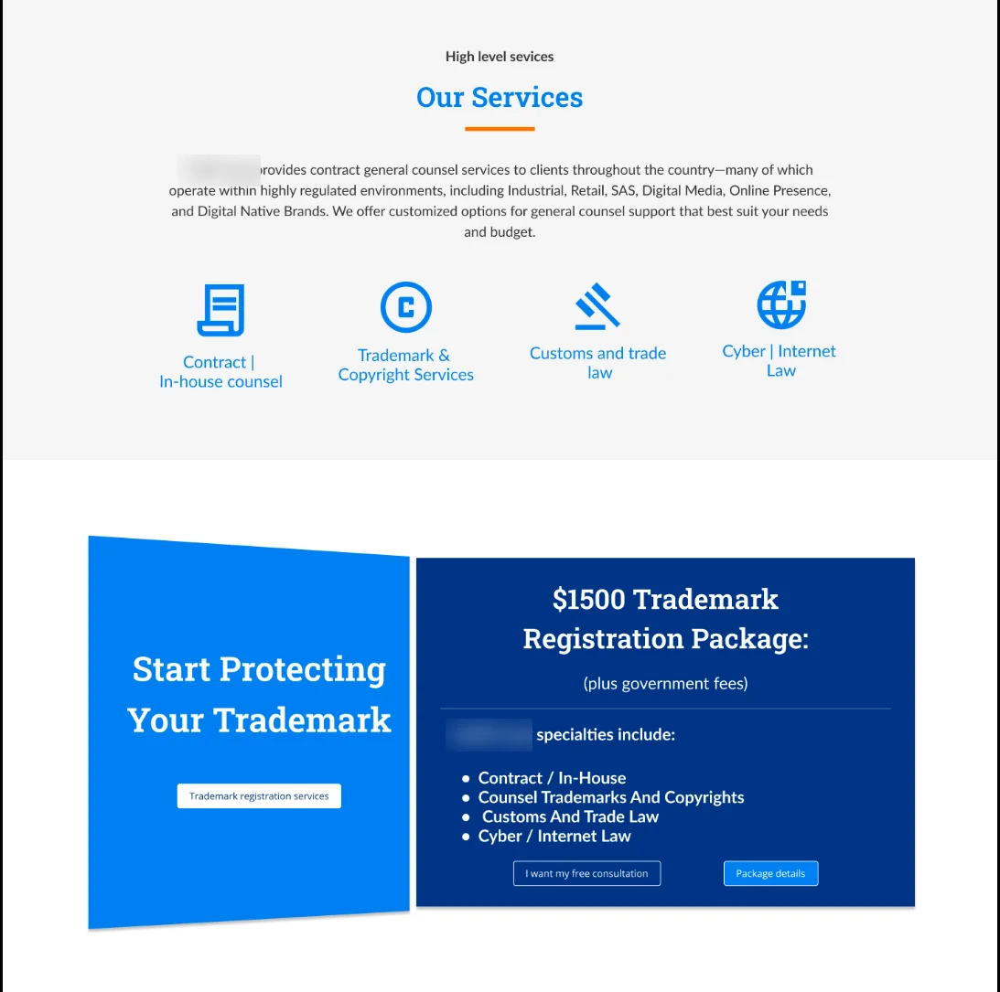
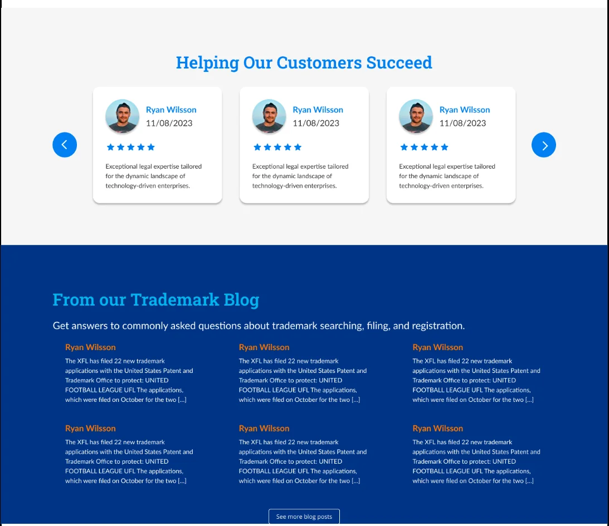
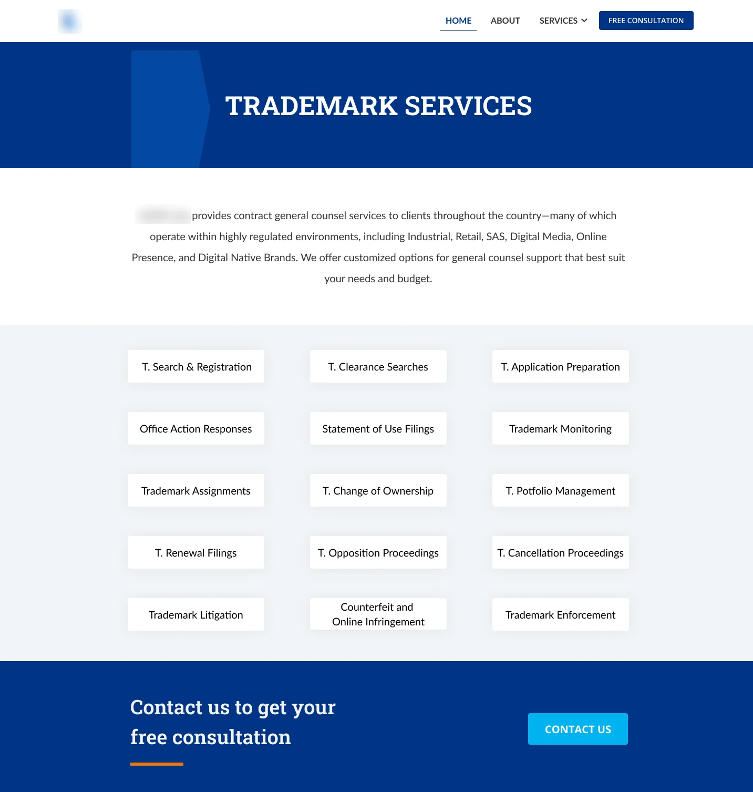
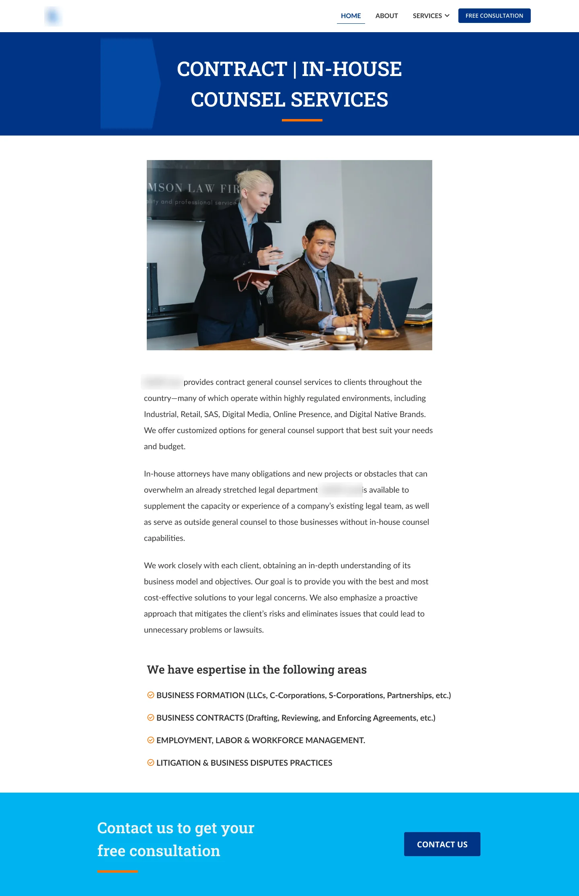

Website · Redesign · 2023Sitio web · Rediseño · 2023
Law Firm Website
A revamp of a law firm’s homepage and services pages, so clients looking for legal help can find their way and book a consultation without friction. La renovación de la home y las páginas de servicios de un estudio de abogados, para que quienes buscan asesoría legal se orienten y agenden una consulta sin fricción.

- The problemEl problema
- The firm’s homepage and services sections needed a better experience and clearer navigation for clients seeking legal assistance.La home y las secciones de servicios del estudio necesitaban una mejor experiencia y una navegación más clara para quienes buscan asesoría legal.
- What I didQué hice
- Redesigned the homepage and the services pages: a focused hero, a services overview, scannable service pages and one consistent call to action.Rediseñé la home y las páginas de servicios: un hero enfocado, un resumen de servicios, páginas de servicio fáciles de recorrer y un único llamado a la acción coherente.
- The resultEl resultado
- High-fidelity designs for the homepage and two service pages — Trademark and Contract / In-house counsel — built on one visual system.Diseños de alta fidelidad para la home y dos páginas de servicio —Marcas y Contratos / Asesoría in-house— sobre un mismo sistema visual.
- RoleRol
- UX UI Designer
- TimelineFecha
- August 2023Agosto 2023
- ClientCliente
- A law firmUn estudio de abogados
- ToolsHerramientas
- Figma · ClickUp
HomepageHome
Proof up front, then a clear path to the right serviceRespaldo desde el inicio y luego un camino claro hacia el servicio correcto
The hero states the firm’s specialization — technology companies — with three short proof points and one consultation button. Below it, the page moves from trust to action: testimonials, the firm’s story, an overview of the four practice areas, a trademark registration package, customer reviews and a blog with answers to common questions.El hero comunica la especialidad del estudio —empresas de tecnología— con tres datos breves de respaldo y un solo botón de consulta. Más abajo, la página va de la confianza a la acción: testimonios, la historia del estudio, un resumen de las cuatro áreas de práctica, un paquete de registro de marca, reseñas de clientes y un blog con respuestas a preguntas frecuentes.


Design decisionsDecisiones de diseño
What the screens are built aroundEn qué se apoyan las pantallas
- 01
One call to action, repeatedUn solo llamado a la acción, repetido
“Free consultation” appears in the navigation, in the hero and in a closing band on each services page.“Consulta gratuita” aparece en la navegación, en el hero y en una franja de cierre en cada página de servicios.
- 02
Services you can scanServicios fáciles de recorrer
Trademark services are laid out as a grid of short, labeled tiles instead of long paragraphs.Los servicios de marcas se presentan como una grilla de etiquetas breves en lugar de párrafos largos.
- 03
Long-form where it’s neededTexto largo donde hace falta
The Contract / In-house counsel page explains the service in depth and closes with a checklist of areas of expertise.La página de Contratos / Asesoría in-house explica el servicio a fondo y cierra con una lista de áreas de especialidad.
- 04
A consistent visual systemUn sistema visual coherente
Deep blue with an orange accent bar marking key titles, plus the same header, page-title band and footer on every page.Azul profundo con una barra naranja que marca los títulos clave, y el mismo header, franja de título y footer en todas las páginas.
Services pagesPáginas de servicios
Every service page ends in the same next stepCada página de servicio termina en el mismo siguiente paso
Both pages share one structure — title band, short introduction, the service content and a “Contact us to get your free consultation” band — so moving between services feels familiar. The firm’s name and contact details are hidden in these images.Ambas páginas comparten una estructura —franja de título, introducción breve, el contenido del servicio y una franja de “Contáctanos para tu consulta gratuita”— para que pasar de un servicio a otro se sienta familiar. El nombre del estudio y sus datos de contacto están ocultos en estas imágenes.


Next projectSiguiente proyecto
Personal Embarcado
Read the case studyLeer el caso de estudio← Previous projectProyecto anterior · All projectsTodos los proyectos
Contact MeContáctame
Let's explore the exciting project you'd like to dive into!¡Hablemos del proyecto que tienes en mente y hagámoslo realidad!